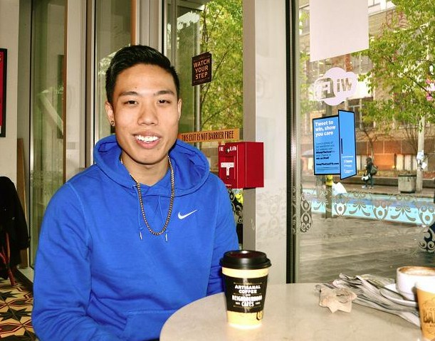

Spotlight: J NHAM
By Diana Whistance-Smith
Photos by Erin Bender Kerbel
Uploaded on November 24, 2013
From competing at lunchtime rap battles in high-school to hosting a popular YouTube channel, Jeff Nham isn't shy to get his voice heard. Even if it means pushing some boundaries.
The up-and-coming hip-hop artist's passion sparked from his humble beginnings in a high school cafeteria.
"I grew up and lived in a low-income area… It's not the greatest place in the world," Nham admits. "I grew up in your stereotypical ghetto environment."
The third-year Business Management student has been working his way up the musical ladder for the past few years. His fan base was born of his popularity in high school, but fans and friends seem to be on a constant high-low; they want to reconnect with him when his fame is on the rise, but are quick to take it back when he's absent from the spotlight.
Jeff credits much of his success to YouTube. "Youtube's been everything. Without YouTube, I don't even know if I'd be pursuing music," he says.
It was the Gangnam Style cover video that Jeff created which triggered immediate success. His high school popularity was the product of being involved in several clubs and sports teams, but it went unquestioned until he started to incorporate rap into his music.
Nham recalls his first gig, a nerve-wracking experience in which the stereo system's failure was the first domino on a much less-than-best performance. Nevertheless, he was applauded by his peers. Since then, he has learned to laugh off negative criticism. It is easier to do this with the overwhelming positive feedback he gets on his videos.
Being advised to have a "Plan B" has not stopped Jeff from pursuing what he loves. After all, taking suggestions from those who have not succeeded in the business is what propels him to move forward with his music.
As for criticisms, Nham admits that he used it as a motivation to improve his sound, but refuses to let the negativity get to him. "I don't really care, I've grown accustomed to it. It makes me laugh and I like it when people talk about me," he said. "If I matter enough that you have to talk about me or post a status about me, I'm doing something right."
|  |
Nham draws his inspiration from Drake, not only because he was able to relate to him on a personal level, but because he bridged the gap between R&B and Hip Hop.
Nham produces the concepts of all of his songs and writes each one of them. Music for him is not a 40-hour work week, it's more of a 24/7 devotion. Inspiration is everywhere for Nham, whether in the music of others, or life experiences. If something inspires him, he writes it down immediately, and tells the story of his life through every song.
Each of his songs has a purpose. "If I mention you, you were significant in my life," Nham points out. "You did something impactful and I'm not going to forget you."
|
Nham is not regretful that his social life has dissipated in the wake of his rapidly progressing music career.
"I'm a lot less social; the more I fall in love with music, the more I distance myself from friends," he says. "I'd rather sit at home and write a song than go out and party."
Although he is studying business, the 20-year-old is confident that his future lies on the ACC stage rather than in an office cubicle. His parents, on the other hand, have had to learn to accept his love of music.
"They tolerate it because they know it's what I love to do. They've given up trying to stop me."
Nham is currently working on an EP, which he hopes to finish before returning to performing. He looks at every new song as a learning experience, watching each song improve with the use of something fresh and experimental.
He owes his sense of musicality to a brief stint of vocal lessons, and being in band and choir from middle school to high school. These experiences led to his appreciation for music, and taught him to read and understand sheet music as well.
In a dog-eat-dog industry, Nham won't let getting bit make him quit. "It's either be successful in music or die trying. I eat, sleep, and breathe music."
In five years, Nham hopes to be making a living off of his music career, maintaining a strong fan base, and touring.
His advice to other hopeful musicians is to love what they do, to have priorities, and to truly devote themselves to their craft.
back to spotlight